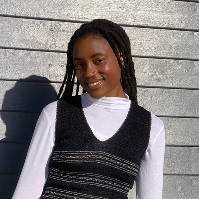

about
I am an MSc Computer Science candidate at the University of the Western Cape and the Centre for Artificial Intelligence Research (CAIR), supervised by Thomas Meyer (University of Cape Town) and Louise Leenen (University of the Western Cape). I work in formal non-monotonic reasoning: logic that draws sensible default conclusions and then revises them when a more specific case overrides the default. My thesis builds on the KLM framework, a standard mathematical account of how that revision should behave, and uses it to give learned rule sets a proper logical reading. The explanation lives in the rules themselves, not in a story fitted around a black box after the fact.
Moving onto a PhD in neurosymbolic AI, I want to focus on the inner workings rather than post-hoc explanations: how logical structure can be embedded into a neural network during training, and how a network might learn its own symbolic representations directly from data.
education
MSc Computer Science
University of the Western Cape
submitting 2026
BSc (Hons) Computer Science, cum laude
University of the Western Cape
2024
BSc Computer Science, cum laude
University of the Western Cape
2023
research
2026
Toward Defeasible Machine Learning: When Learned Rule Sets Become Defeasible Theories
24th International Workshop on Nonmonotonic Reasoning (NMR 2026), Federated Logic Conference (FLoC), Lisbon, Portugal
2026
Toward a Defeasible Semantics for Symbolic Classifiers
Doctoral Consortium, 23rd International Conference on Principles of Knowledge Representation and Reasoning (KR 2026 DC), Federated Logic Conference (FLoC), Lisbon, Portugal
2026
First Steps Towards Human-AI Ranking Aggregation
Joint Workshop on Statistics and Knowledge Integration for Logic, Learning, Ethical Decisions, and LLMs (SKILLED-LLMs 2026), Federated Logic Conference (FLoC), Lisbon, Portugal
2025
An Override-Aware Classifier for Transparent AI
6th Southern African Conference on Artificial Intelligence Research (SACAIR 2025), Cape Town, South Africa
2024
Enhanced Electronic Health Record Text Summarisation Using Large Language Models
5th Southern African Conference on Artificial Intelligence Research (SACAIR 2024), Bloemfontein, South Africa